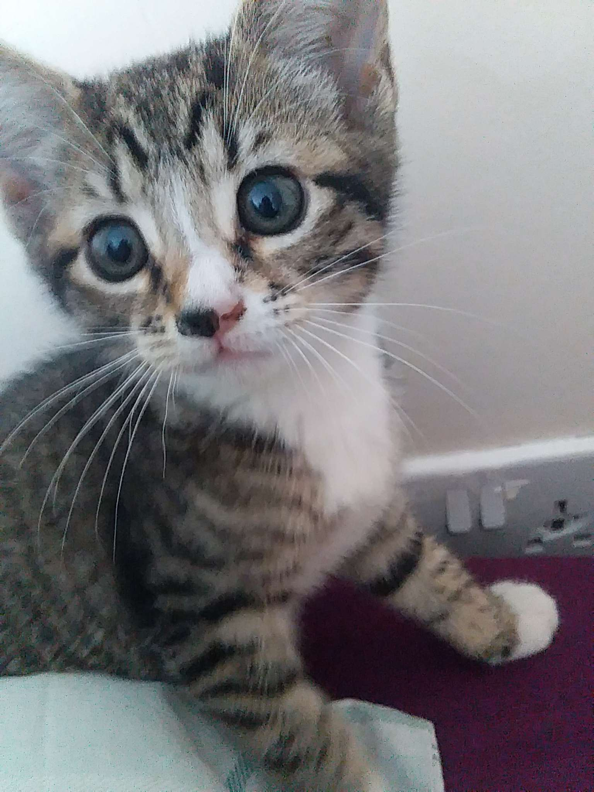

Cats are one of the most popular pets in the world, with an estimated 600 million of them living among humans. A group of cats is called a clowder. The oldest known pet cat was found in a 9,500-year-old grave on the Mediterranean island of Cyprus. Cats can make over 100 different sounds, while dogs can make only about 10. A cat's brain is more similar to a human's brain than a dog's brain is.
Cats have flexible bodies and can rotate their ears 180 degrees. In ancient Egypt, cats were revered and worshipped. Killing a cat, even by accident, was considered a crime punishable by death. The world's largest cat breed is the Savannah, which can weigh up to 30 pounds. Cats spend up to 50% of their waking hours grooming themselves. A cat's nose is unique, much like a human's fingerprint.
Cats have a special collarbone that allows them to always land on their feet when they fall. This reflex is known as the "righting reflex." A cat's whiskers aren't just for looks. They are actually incredibly sensitive and help the cat detect changes in their surroundings.
Contrary to popular belief, cats are not actually lactose intolerant. However, consuming too much milk can cause them to have an upset stomach. Cats can run up to speeds of 30 miles per hour, making them incredibly fast animals. Unlike dogs, cats cannot taste sweet flavors. They lack the necessary taste buds to detect sweetness.
A cat's heart beats at a much faster rate than a human's. While humans typically have a resting heart rate of 60-100 beats per minute, a cat's resting heart rate can range from 140-220 beats per minute. Cats have an acute sense of hearing and can detect sounds at frequencies higher than humans can hear.
Some cats are known to have an extra toe on their paws, a condition called polydactylism. Cats are crepuscular animals, which means they are most active during the dawn and dusk hours. A group of kittens is called a kindle, while a group of adult cats is called a clowder.
